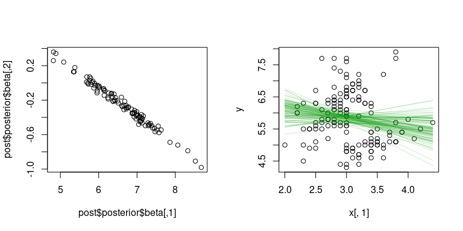

The goal of iNZightBayes is to …
Installation
You can install the released version of iNZightBayes from CRAN with:
# install.packages("iNZightBayes")And the development version from GitHub with:
# install.packages("devtools")
devtools::install_github("iNZightVIT/iNZightBayes")Example
library(iNZightBayes)
post <- estimate_mean(~Sepal.Width, data = iris)
summary(post)
#>
#> Iterations = 1001:2000
#> Thinning interval = 1
#> Number of chains = 1
#> Sample size per chain = 1000
#>
#> 1. Empirical mean and standard deviation for each variable,
#> plus standard error of the mean:
#>
#> Mean SD Naive SE Time-series SE
#> mu 3.0583 0.03485 0.0011022 0.0010898
#> sigma2 0.1919 0.02208 0.0006983 0.0006983
#>
#> 2. Quantiles for each variable:
#>
#> 2.5% 25% 50% 75% 97.5%
#> mu 2.9928 3.0341 3.0580 3.0817 3.1275
#> sigma2 0.1558 0.1766 0.1897 0.2053 0.2433
plot(post)
In some cases, the posterior can be calculated exactly.
post <- estimate_proportions(c(20, 50, 30), alpha = c(10, 10, 10))
summary(post)
#> mean var 2.5% 97.5%
#> theta_1 0.231 -4.52e-05 0.163 0.307
#> theta_2 0.462 -3.16e-05 0.378 0.547
#> theta_3 0.308 -4.07e-05 0.233 0.388
plot(post)
There’s also linear regression:
# temporary syntax:
y <- iris$Sepal.Length
x <- cbind(iris$Sepal.Width)
post <- gibbs_lm(y, x, 100)
par(mfrow = c(1, 2))
plot(post$posterior$beta)
plot(x[,1], y)
apply(post$posterior$beta, 1,
function(b)
lines(x[,1], cbind(1, x) %*% b, col = "#00990030"))
#> NULL